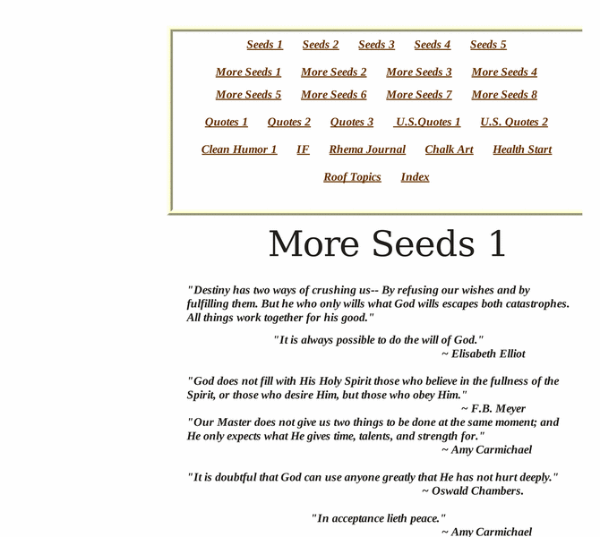

Previewing: Seeds Previewing: Seeds 
Use the left/right red arrow controls to navigate through this ring - Click the preview image to visit the member site.

A collection of the best Christian inspirational poetry, quotes, and short stories to encourage the weary Christian.
Seeds owned by:
 joann7 joann7
A member of the original webring since 01/15/2004.
|
|